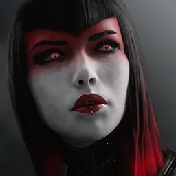

📋 Patch 1.15 — Splash Damage
Released 2026-06-30 · Scout overview & sim-grounded predictions ·
official notes ↗
Heads up: these are predictions, not measured results. The engine's
numeric base is still the pre-1.15 snapshot (2026-06-20), so the sim reads below are the current
meta — every forecast is grounded in the patch's stated numbers. The full numeric re-sim (new hero stats,
updated builds & matchups) runs once 1.15 goes live on omeda.city.
TL;DR — what actually changes how you play
New hero — Ikra
A long-range splash-damage mage (Carry/Mid): bubble zoning, a suspend projectile, and a channeled knock-up ult.
Map reworked — Daybreak V6
More rotation and dive paths, a redesigned Orb Prime pit, and retuned shrine/buff timers — rotation timing and objective tempo shift.
Jungle is harder to clear
Camps and Red/Blue now deal current-health damage, so you finish lower; the uniform 5 CS per camp makes the enemy jungler’s farm easy to track.
Comeback XP: later, harder
Triggers at a bigger lead (1.5 → 1.75) and ramps harder — snowballs are stickier early, catch-up sharper once behind.
Towers are predictable
A 0.25s target-switch delay + reset-on-swap makes diving and last-hitting under tower skill-based, not random.
Crits are pseudo-random
Misses raise your next crit chance and crits lower it — far less coin-flip variance in fights.
Eternals trimmed
Durability, sustain, and scaling blessings each lost a little, with a few soft reworks (Krix anti-heal, Vesh mana-on-takedown). Re-check your draft.
Items reshuffled
Earth Spirit → the new Gamma Gloop crest, Rebirth reworked into a resurrect item; tanks gained armor while some carry items lost power.
Biggest hero swings
Revenant jumps toward pick/ban contention; Terra’s dive durability takes the patch’s hardest hit. Twelve more notable changes below.
📈 Meta read1.15 is the biggest shake-up since the Eternals overhaul: a new control mage (Ikra), a full Daybreak V6 map and standardized jungle economy, stickier-early/harder-catch-up comeback XP, more predictable tower diving, less streaky crit, a broad Eternal trim, and an item reshuffle. Net direction is a healthier mid-game built on cleaner objective tempo and macro reads rather than raw stat ceilings — re-learn your rotations, re-check your blessings, and re-time your spikes.
Hero changes
2 meta-shifting · 12 notable · 7 minor · bugfix-only heroes excluded
▲ buff▼ nerf◆ mixedtap a hero to jump to its changes
Meta-shifting 2 heroes
full page ↗
Revenant
carry
▲ Buff
Meta-shifting
- Mana regen growth 0.15 -> 0.18
- Obliterate scaling 40/50/60/70/80% -> 40/55/70/85/100%
- Scar scaling 15%/20% -> 20%/30% (phys/mag)
- Hellfire Rounds speed/attack scaling 15% -> 18% (monster cap lowered to 200-450)
WhyObliterate scaling jumps 40/50/60/70/80% -> 40/55/70/85/100% — a +20-point swing at max on his homing-missile ult — and Scar 15%/20% -> 20%/30% (phys/mag) on his cursed orb, so two of his core abilities gain large damage; the sim already opens Viper into a sustained-DPS crit core, and with Obliterate to 100% his burst window grows sharply.
What it'll changeHis combo and teamfight ult damage spike hard, plausibly pushing the Vanquisher/Imperator crit line above its current sub-52% field read and into pick/ban contention as a carry — the largest single hero swing in this patch.
Sim read (pre-1.15): top field core Crit Burst — Vanquisher, Imperator, Terminus · 51.8% wr · 1,289 games
full page ↗
Terra
offlane
◆ Mixed
Meta-shifting
- Iron Resolve damage reduction 30/33/36/39/42% -> 25/27.5/30/32.5/35%
- Ruthless Assault damage 50/85/120/155/190 -> 50/80/110/140/170, monster cap 100 -> 200 (+20/lvl)
- Wild Rush damage 27/45/63/81/99 -> 27/48/69/90/111, max charge raised to 81/144/207/270/333
WhyHer signature durability passive Iron Resolve is cut hard — damage reduction 30/33/36/39/42% -> 25/27.5/30/32.5/35%, a 7-point drop at max — so the trait that lets her dive and survive is materially weaker; the Ruthless Assault and Wild Rush reshuffles add monster damage and charge ceiling but trim mid-rank hero damage.
What it'll changeLosing a chunk of her core damage reduction directly lowers her effective tankiness in fights, the thing that defines her offlane dive — this should pull her power down even as her clear improves, a change big enough to reshape how safely she can engage.
Sim read (pre-1.15): top field core Physical-Def Frontline — TaintedGuard, FireBlossom, Transference · 53.7% wr · 143 games
Notable 12 heroes
full page ↗
Adele
support
▼ Nerf
Notable
- Imperial Lash damage 45/70/95/120/145 -> 45/65/85/105/125
- Seeds Of Dominion: Imperial Lash cooldown reduction 12% -> 10%
- Crown Of Thorns ally damage 7% -> 6%
- Tyrant Of Thorns crown effectiveness 250% -> 300% (the lone buff)
WhyImperial Lash damage drops at every rank (max 145 -> 125) and the Seeds Of Dominion cooldown reduction falls 12% -> 10%, so her poke pattern hits softer and recurs slower; the only buff, Tyrant Of Thorns crown effectiveness 250% -> 300%, is a deep-investment scaling node, not a lane lever.
What it'll changeHer early support poke and tempo get clipped, nudging her further toward the tanky enabler the field already favors — the top meta build is the durable Dawnstar/Xenia/Raiment frontline, not a damage line, so this mostly trims her kill-pressure lanes rather than her viability.
Sim read (pre-1.15): top field core Physical-Def Frontline — Dawnstar, Xenia, RaimentOfRenewal · 60.3% wr · 598 games
full page ↗
Argus
midlane
▲ Buff
Notable
- Mana regen 1.7 -> 2.0, Physical Power growth 3.1 -> 3.5
- Particle Shredder mana cost lowered to 12/14/16/18/20
- Infinite Obliteration projectile speed +25% -> +50%
- Synaptic Obliterator cancel delay 0.5s -> 0.1s
WhyParticle Shredder mana cost drops to 12/14/16/18/20 and mana regen rises 1.7 -> 2.0, easing the kit's biggest constraint, while Physical Power growth 3.1 -> 3.5 and Infinite Obliteration projectile speed +25% -> +50% make his obliteration line land far more reliably; Synaptic Obliterator's cancel delay 0.5s -> 0.1s tightens his combo into squishies.
What it'll changeBetter mana lets him spam his rotation in lane without backing off, and the faster, snappier projectiles raise his hit rate on the 10-second burst the sim already builds for — expect a meaningful lane-bully and skirmish bump for mid Argus.
Sim read (pre-1.15): top field core Magical DPS Carry — AzureCore, Entropy, WraithLeggings · 56.2% wr · 1,199 games
full page ↗
Crunch
offlane
▲ Buff
Notable
- Health growth 136 -> 141
- Combo Crunch attack speed 6% -> 7.5% (max stacks 5 -> 4)
- Falcon Crunch right-crunch modifier +10% -> +15%
- Cross Crunch scaling 25%/28% -> 28%/30% (phys/mag); Right Crunch scaling 100%/65% -> 110%/75% (phys/mag)
WhyHis ability scaling is broadly buffed — Right Crunch 100%/65% -> 110%/75% and Cross Crunch 25%/28% -> 28%/30% (phys/mag), Falcon Crunch right-crunch modifier +10% -> +15%, plus Health growth 136 -> 141 — so each combo hits harder and he is sturdier; Combo Crunch attack speed 6% -> 7.5% at fewer max stacks (5 -> 4) ramps his on-hit faster.
What it'll changeHis combo burst and dive damage climb across the board while he gains durability, making the Viper/Basilisk bruiser plan more threatening on the dive — a clear power bump that should lift his offlane pick rate above the sub-52% field read.
Sim read (pre-1.15): top field core Physical Bruiser — BerserkersAxe, Augmentation, Salvation · 51.6% wr · 263 games
full page ↗
Dekker
support
▲ Buff
Notable
- Polarity Strike shield 150/250/350 -> 200/350/500
- Mana regen 1.65 -> 1.75, mana growth 34 -> 38
WhyPolarity Strike shield jumps sharply (150/250/350 -> 200/350/500, a +150 top-end swing) and mana regen/growth both rise (1.65 -> 1.75, 34 -> 38), directly buffing her peel value and letting her cast through fights without going dry.
What it'll changeThe bigger shield makes her a stronger save-and-engage support immediately, and the mana relief eases her early lane; this raises her floor as a peel pick even though the sim's tanky Stonewall core stays the same.
Sim read (pre-1.15): top field core Magical DPS Carry — Crescelia, Timewarp, Dynamo · 50.7% wr · 1,680 games
full page ↗
Kallari
jungle
▼ Nerf
Notable
- Death Mark bonus physical-power scaling 2.5% -> 2%
- Shadow Walk health-regen physical-penetration scaling 150% -> 100%
WhyDeath Mark bonus physical-power scaling 2.5% -> 2% trims her execute payoff, and Shadow Walk's health-regen physical-penetration scaling 150% -> 100% cuts the sustain she gets from stacking penetration on her assassin build.
What it'll changeHer pick-off burst and lane-sustain both dip, making the squishy lethality assassin plan a touch riskier to snowball; the Malady/Vanquisher meta build still works but with a slightly lower ceiling, a real but contained nerf.
Sim read (pre-1.15): top field core Lethality Skirmisher — Malady, Vanquisher, SpearOfDesolation · 55.7% wr · 1,009 games
full page ↗
Murdock
carry
▼ Nerf
Notable
- Physical Power 61 -> 59
- Justice's Reach range bonus +300 -> +250
- Shots Fired scaling 40/52/64/76% -> 35/45/55/65%
- Buckshot damage 80/108/136/164/192 -> 70/98/126/154/182
WhyA four-pronged carry nerf: Physical Power 61 -> 59, Justice's Reach range bonus +300 -> +250, Shots Fired scaling 40/52/64/76% -> 35/45/55/65%, and Buckshot 80/108/136/164/192 -> 70/98/126/154/182 — both his signature poke ability and his empowered-shot DPS lose meaningful damage and reach.
What it'll changeHis safe long-range poke pattern is noticeably weaker, shortening his bully window and lowering his damage spike; expect the LightningHawk crit-burst meta line to remain but his lane pressure and pick priority to fall.
Sim read (pre-1.15): top field core Crit Burst — LightningHawk, Vanquisher, Imperator · 56.0% wr · 2,021 games
full page ↗
Muriel
support
◆ Mixed
Notable
- Physical Power growth 2.6 -> 3.4 (off-build flavor)
- Alacrity cooldown 11/10.5/10/9.5/9 -> 12/11.5/11/10.5/10
- Reversal Of Fortune damage reduction 40% -> 35%
WhyA mixed pass on her utility: Reversal Of Fortune damage reduction 40% -> 35% weakens her marquee defensive ult and Alacrity cooldown lengthens (e.g. 9 -> 10 at rank 5), while the Physical Power growth 2.6 -> 3.4 only matters on an off-build damage flavor.
What it'll changeHer save-value as a support drops modestly — the protection ult shields less and her speed buff is available less often — so her peel pick loses a little priority while the niche AP-damage build the sim shows stays a fringe option.
Sim read (pre-1.15): top field core Magical DPS Carry — Marshal, CrystalTear, Windcaller · 54.7% wr · 392 games
full page ↗
Phase
support
▼ Nerf
Notable
- Physical Armor growth 5.5 -> 5.2
- Telekinetic Link range-break delay 1.3s -> 1s
- Hyperflux attack speed 50/75/100% -> 40/60/80%
WhyPhase is trimmed across her enabling and survival: Hyperflux attack speed 50/75/100% -> 40/60/80% cuts the steroid she gives her carry, Telekinetic Link range-break delay 1.3s -> 1s makes her tether break sooner, and Physical Armor growth 5.5 -> 5.2 shaves her own durability.
What it'll changeHer value as a hyper-carry support dips — the attack-speed buff and link uptime that define her are both weaker — lowering her support priority; the tanky Stonewall sim core stays but her pairing power drops.
Sim read (pre-1.15): top field core Magical Bruiser (Mixed-Def) — Marshal, EnmasBlessing, GalaxyGreaves · 53.8% wr · 1,355 games
full page ↗
Sevarog
offlane
◆ Mixed
Notable
- Reaper Of Souls health per stack 1 -> 2, tier gains 50/100/200/400 -> 40/80/180/350
- Siphon health-steal duration 30s -> 15s, monster damage 20-40 -> 30-50
WhyA mixed identity shift: Reaper Of Souls health per stack doubles (1 -> 2) but the tier thresholds drop (50/100/200/400 -> 40/80/180/350), so he reaches durability tiers faster and gains more HP per stack, while Siphon's health-steal duration is halved (30s -> 15s) with higher monster damage (20-40 -> 30-50).
What it'll changeHis stacking scales into a tankier late-game more aggressively and clears camps a bit faster, but his lane-sustain window from Siphon shrinks; net it pushes him further toward the scaling frontline the field already builds, a real but two-sided adjustment.
Sim read (pre-1.15): top field core Physical-Def Frontline — FireBlossom, TaintedGuard, FistOfJazuul · 52.0% wr · 165 games
full page ↗
Wraith
carry
◆ Mixed
Notable
- Stealth Matrix cooldown modifier +20% -> +10% (a buff — less cooldown penalty)
- Peekaboo! max-health damage 6-8% -> 5.5-7.5%, magical-power scaling 2% -> 1.5%
- Surprise, Surprise! cooldown 26/24/22/20/18 -> 23/21.5/20/18.5/17, movement speed 20% -> 25%
WhyA mixed kit pass: Stealth Matrix cooldown modifier +20% -> +10% (less penalty) and Surprise, Surprise! cooldown drops (e.g. 18 -> 17 at max) with movement speed 20% -> 25%, improving his mobility and uptime, while Peekaboo! max-health damage 6-8% -> 5.5-7.5% and magical scaling 2% -> 1.5% trim that ability's payoff.
What it'll changeHe gains roam/reposition uptime and re-stealth tempo at the cost of a little ability damage — a quality-of-life nudge that helps his pick-and-skirmish pattern; given his sub-48% field read this is a welcome but modest lift, not a fix.
Sim read (pre-1.15): top field core Physical Frontline — Soulbinder, Noxia, WraithLeggings · 47.4% wr · 1,096 games
full page ↗
Wukong
jungle
▼ Nerf
Notable
- Health growth 134 -> 132
- Force Push physical-power scaling 110% -> 100%
- Windsurge physical-power scaling 100% -> 90%
- 84,000 Hairs clone scaling 14% -> 12% (phys), max-health scaling 18% -> 16%
WhyA broad scaling nerf: Force Push 110% -> 100% and Windsurge 100% -> 90% physical-power scaling cut his combo damage, 84,000 Hairs clone scaling 14% -> 12% and max-health scaling 18% -> 16% weaken his ult, and Health growth 134 -> 132 shaves durability.
What it'll changeEvery part of his damage and his clone ult tick down, lowering his already coin-flip jungle output (the field build sits at 50%); expect his clear and burst to feel weaker and his pick priority to slide, a clear if not dramatic nerf.
Sim read (pre-1.15): top field core Physical Skirmisher — Mindrazor, Augmentation, Painweaver · 50.0% wr · 74 games
full page ↗
Zinx
support
▼ Nerf
Notable
- Terminal Treatment on-hit bonus 0-60% -> 0-50%
- Basic-attack time 1.3 -> 1.35 (slower)
- Refibrillator magical-power scaling 15% -> 12%
WhyHer enabling and damage are trimmed together: Terminal Treatment on-hit bonus 0-60% -> 0-50% cuts the on-hit she lends, basic-attack time 1.3 -> 1.35 slows her own attacks, and Refibrillator magical-power scaling 15% -> 12% lowers her ability payoff.
What it'll changeShe offers a bit less on-hit pressure and personal damage as a support, slightly lowering her priority; the Oblivion Crown heal/shield sim core and the strong Prophecy meta line both still stand, so the nerf shaves her ceiling without changing her role.
Sim read (pre-1.15): top field core Magical Burst — Prophecy, Spectra, Orion · 56.0% wr · 1,819 games
Minor 7 heroes
full page ↗
Bayle
offlane
◆ Mixed
Minor
- Swift Strikes third-strike modifier -25% -> -20% (a small buff)
- Dire Howl mana 50 -> 60, omnivamp 10-18% -> 8-16%, cooldown 15 -> 16
WhyThis is a genuine mixed: Swift Strikes third-strike modifier -25% -> -20% is a small damage buff to her basic chain, but Dire Howl gets hit on three axes (mana 50 -> 60, omnivamp 10-18% -> 8-16%, cooldown 15 -> 16), trimming her sustain and uptime.
What it'll changeHer in-fight self-healing and re-engage get a touch weaker while her steady-state damage ticks up slightly; the sim's sustain-leaning Solaris/Viper core still holds, so this is close to a wash that slightly favors the bruiser-trade meta build over a pure drain plan.
Sim read (pre-1.15): top field core Physical Bruiser (Physical-Def) — Overlord, Rapture, CursedScroll · 57.8% wr · 883 games
full page ↗
Boris
jungle
▼ Nerf
Minor
- Tesseract Device attack speed per canister 9-18% -> 8-17%
- Tesseract Device zap damage 5 (+2.25/lvl) -> 5 (+2/lvl)
WhyBoth Tesseract Device numbers shrink — attack speed per canister 9-18% -> 8-17% and zap scaling 5 (+2.25/lvl) -> 5 (+2/lvl) — so his core attack-speed and tick damage engine loses a small slice at every canister and level.
What it'll changeHis clear and sustained DPS get marginally slower, but the build path and jungle viability are unchanged; the sim's Viper skirmish core and the field's SkySplitter bruiser line both still hold, so this is a light shave, not a rework.
Sim read (pre-1.15): top field core Physical Bruiser — SkySplitter, TaintedBlade, Rapture · 54.4% wr · 1,089 games
full page ↗
Greystone
offlane
▲ Buff
Minor
- Health growth 132 -> 135, Mana 280 -> 300
- Make Way damage 80/125/170/215/260 -> 80/130/180/230/280
WhyMake Way damage scales up at every rank past one (max 260 -> 280) and he gets baseline durability/utility with Health growth 132 -> 135 and Mana 280 -> 300, so his wave-clear and poke ability hits harder while he sustains casting longer.
What it'll changeA modest, even buff that makes his offlane lane phase a bit stronger and his all-in slightly more rewarding; the sim's Viper bruiser core and the Krix eHP loadout still fit, so it lifts his floor without changing the build.
Sim read (pre-1.15): top field core Physical Bruiser — Overlord, Rapture, AegisOfAgawar · 52.2% wr · 987 games
full page ↗
Howitzer
midlane
▼ Nerf
Minor
- Sniper Shells omnivamp per stack 2% -> 1.5%
WhyThe only change is Sniper Shells omnivamp per stack 2% -> 1.5%, a small cut to his in-combat self-healing on his stacking passive.
What it'll changeSlightly less sustain in extended fights, but his burst, build and mid viability are untouched; the sim's Oathkeeper skirmish core and the Combustion meta line are unaffected, so this barely moves the needle.
Sim read (pre-1.15): top field core Magical Skirmisher — Combustion, WraithLeggings, Noxia · 51.9% wr · 645 games
full page ↗
Neon
midlane
▼ Nerf
Minor
- Final Thread recast delay 0.05s -> 0.32s
WhyThe sole change, Final Thread recast delay 0.05s -> 0.32s, slows the second-cast of her ult, widening the gap an opponent has to react or sidestep the follow-up.
What it'll changeHer burst combo loses a sliver of reliability against mobile targets but her damage, mana and build are untouched; the Combustion magical-burst plan and her mid viability hold, making this a small mechanical execution nerf.
Sim read (pre-1.15): top field core Magical Burst — Combustion, WraithLeggings, AmuletOfChaos · 51.1% wr · 587 games
full page ↗
The Fey
midlane
◆ Mixed
Minor
- Mana growth 27 -> 32, movement speed 675 -> 670
- Bramble Patch magical-power scaling 75% -> 70%, mana cost 70-110 -> 60-100
WhyA mixed pass: Bramble Patch magical-power scaling 75% -> 70% slightly lowers her zone damage, but its mana cost drops (70-110 -> 60-100) and Mana growth rises 27 -> 32, easing her mana strain at the cost of 5 movement speed (675 -> 670).
What it'll changeShe trades a little ability damage for much better mana economy, so she can hold and re-zone lanes longer without backing — close to a wash that slightly improves her sustained mid presence; the Combustion frontline-mage build and her strong field read hold.
Sim read (pre-1.15): top field core Magical Frontline — Combustion, WraithLeggings, Megacosm · 55.7% wr · 1,689 games
full page ↗
Yin
jungle
▼ Nerf
Minor
- Rising Storm: fixed a stack bug with Eternals
- Windburn physical-power scaling 10-20% -> 10-18%, cooldown 12-8 -> 13-9
WhyWindburn physical-power scaling 10-20% -> 10-18% and cooldown 12-8 -> 13-9 slightly cut his damage and re-up speed on a core ability, and the Rising Storm Eternal-stack bug fix removes an interaction that was inflating his stacking.
What it'll changeHis combo damage and ability cadence dip a touch, and the bugfix may quietly remove free power some loadouts leaned on; the crit-drain meta build still holds, so this is a measured shave to his jungle output rather than a build change.
Sim read (pre-1.15): top field core Crit Drain — SkySplitter, LightningHawk, OnixianQuiver · 55.0% wr · 540 games
📈 Meta readThe single biggest swings are Revenant up (Obliterate to 100% + Scar buffs push his crit carry toward pick/ban) and Terra down (a 7-point Iron Resolve cut guts her dive durability). As a group the trims land hardest on safe poke and sustain carries (Murdock, Kallari, Boris) while combo bruisers (Crunch) and peel supports (Dekker) gain ground.
Eternals (draft blessings)
1.15 trims the Eternals broadly rather than reworking the system: the durability, sustain, and pure-scaling blessings that anchored the meta each lost a little, while a handful got soft reworks that change how you use them (Krix now applies anti-heal, Vesh restores mana on takedowns, Marrow's Jealousy became a health-threshold damage amp, Vermis's Crush gained an immobilize burst with a per-target cooldown). Re-check your major and both minors after this patch.
▲ buff▼ nerf◆ mixed⟳ shifttap an Eternal to jump to its change
Vermis
◆ Mixed
- Major's max-health damage scaling trimmed (3% +0.25%/lvl -> 3% +0.2%/lvl); Serration missing-health 4% -> 3.5%; Sub Surface damage reduction 8% -> 7%; Crush now deals 8% immobilizing damage (was 5%) but on an 8s per-target cooldown (soft rework); Breach armor shred 30% -> 35%, duration 3.5 -> 4s.
MeaningStill the go-to anti-tank on-hit Eternal; Crush turns into a periodic immobilize burst, and Breach shreds a bit more for longer.
Marrow
◆ Mixed
- Major omnivamp 0.85% -> 0.75% (+0.05%/lvl); The Maw true damage +12% -> +10% and threshold 30% -> 40%; Jealousy reworked into a 1-8% damage amp scaling with your health (20-100%).
MeaningSlightly less raw lifesteal, but The Maw executes from a higher threshold and Jealousy now rewards staying healthy with a damage amp.
Thraex
▼ Nerf
- Major bonus damage +3% (+0.5%/lvl) -> +3% (+0.4%/lvl) and damage reduction growth trimmed; Ferocity attack speed 1.5% -> 1.25%.
MeaningA small across-the-board trim to the bruiser blessing — still solid, just slightly weaker scaling.
Nihil
▼ Nerf
- Major bonus-stat modifier 20% -> 18%.
MeaningA touch less of everything from the all-stats major.
Krix
⟳ Shift
- Festering Wounds now applies 45% anti-heal on immobilizing effects (soft rework); Predator camp-leader kill damage +8% -> +10% and adds +3% movement speed for 20s on kill.
MeaningKrix becomes an anti-heal enabler for CC-heavy comps, and the jungle path is a bit faster and stickier after camps.
Idrisil
▼ Nerf
- Mending healing 4/5/6/8% -> 3/4/5/7%.
MeaningThe armor-tank sustain blessing heals a little less at every rank.
Vesh
⟳ Shift
- Major ability damage +6% (+0.5%/min) -> +7% (+0.4%/min); Tithe Of Death ability haste capped at 15 takedowns (30 max) and now restores 15% max mana on takedown (soft rework).
MeaningFront-loaded a bit more, capped late, and now pays mana back on kills — better for mana-hungry mages snowballing fights.
Xyris
▼ Nerf
- Major damage 4% -> 3% and per-10-units 0.6% -> 0.4%, capped at 400 unit kills; Furor attack-speed duration 4.5 -> 4s; Iron Will crit heal 8% -> 7%; Cull The Weak minion/monster damage 8% -> 7%; Bone Collector lost its +5% crit-damage bonus.
MeaningThe crit hyper-carry blessing was trimmed and capped — still farm-to-spike, just a lower ceiling.
Exarch
▼ Nerf
- Preservation healing/shielding received +15% -> +12%; Fervour magical-power scaling 6% -> 5%; Omnipresent out-of-combat movement 8% -> 7%; Delayed Fate DoT conversion 25% -> 20%.
MeaningThe enchanter/scaling support blessing lost a little on every node — modest sustain/utility trim.
Lotus
▼ Nerf
- Major damage 1.5% -> 1%; Masterpiece movement on takedown 6% -> 5%; Prima Donna damage dealt +12% -> +10% and damage taken +6% -> +5%; Fragrance magical damage 5% -> 4%.
MeaningThe safe, flexible mage blessing is a bit weaker on both its offense and its trade-off nodes.
Demiurge
▼ Nerf
- Major bonus-stat modifier 12% -> 10%; Tri-Core on-hit damage 6% -> 5%; Cursed Corrupted ability-haste-per-crit 1 -> 0.8; Memory Leak mana-from-ability 6% -> 5% and max mana 600 -> 500.
MeaningThe late-game full-build scaler lost a little off each node; still the stack-into-late blessing.
Aion
▼ Nerf
- Major gold-from-ability-damage 8% -> 7%; Arcane Resonance cooldown progression 1% -> 0.75% per mana regen, max 75% -> 50%.
MeaningThe mana-economy mage blessing converts a bit less mana into gold and cooldowns.
📈 Meta readThis is a trim, not a teardown — the durability/sustain/scaling anchors (Demiurge, Lotus, Xyris, Exarch, Thraex and more) each lost a little, flattening the gap between the safe meta blessings and the rest. The soft reworks change how you draft: Krix now enables anti-heal for crowd-control comps, Vesh pays mana back on takedowns for snowballing mages, Marrow's Jealousy rewards staying healthy, and Vermis's Crush adds a periodic immobilize — re-check your major and both minors.
Items
✦ new✕ removed⟳ rework▲ buff◆ mixed▼ nerftap an item to jump to its change
Gamma Gloop
✦ New
New Titan crest (replaces Earth Spirit): 180 HP / 8 Phys Armor / 5 Mag Armor; active Gob Glue deals 80 (+3% bonus-HP) magic damage, Grounds 1.5s, leaves a 5s 30% slow field.
Earth Spirit
✕ Removed
Removed from the game — replaced by the Gamma Gloop tank crest.
Rebirth
⟳ Shift
Reworked fighter item: cost 2600 -> 2800; +50 Power / +300 HP / -40 Phys Armor / -35 Mag Armor / -10 Ability Haste; resurrect at 50% base HP/mana after 3s.
Citadel
▲ Buff
Physical armor 35 -> 40.
Echelon Cloak
▲ Buff
Cost 2900 -> 2800, physical power 40 -> 45, cooldown 12 -> 10s.
Gaussian Greaves
▲ Buff
Physical armor 30 -> 35.
Giant’s Ring
▲ Buff
Physical armor 45 -> 50.
Oathkeeper
▲ Buff
Mana 250 -> 275; fixed a bug where it granted no health.
Resolution
▲ Buff
Darksteel on-hit mana scaling 2% -> 2.5%.
Soulbinder
▲ Buff
Farseer cooldown 10 -> 8s.
Stonewall
▲ Buff
Health 250 -> 275, health regen 80% -> 100%.
Timewarp
▲ Buff
Base mana regen 125% -> 150%.
Astral Catalyst
◆ Mixed
Cost 2850 -> 2950, magical power 80 -> 85.
Claw of Hermes
▼ Nerf
Magical power 90 -> 85.
Eviscerator
▼ Nerf
Omnivamp 10% -> 8%.
Sky Splitter
▼ Nerf
Physical power 40 -> 35.
Storm Breaker
▼ Nerf
Physical power 45 -> 40.
Transference
▼ Nerf
Ionizing-charge movement speed 12% -> 8%.
📈 Meta readTanks and frontline supports are the clear winners — Stonewall, Citadel, Giant's Ring and Gaussian Greaves all got sturdier and the new Gamma Gloop crest adds a grounding tank tool — while crit/carry power was shaved (Sky Splitter, Stormbreaker, Eviscerator). Echelon Cloak and the Rebirth fighter-resurrect rework give bruisers fresh options, and the Oathkeeper health bugfix quietly buffs every build that ran it.
ARAM balance
1.15 also passes over ARAM (Daybreak's single-lane mode). The systemic changes matter most: Gold Drip ramps with level (more income mid-game), minions gain real magical armor at level (mage poke into the wave falls off), and the big sustain/stack items (Alchemical Rod/Azure Core, Soul Chalice/Resolution, Orb of Growth/Enlightenment) now stack every 4s instead of 2s/1.5s, slowing how fast stacking carries come online. On top of that, ~35 heroes got per-mode damage/healing/damage-received multiplier tuning to flatten the ARAM tier list. These are mode-only knobs (they do NOT touch the 5v5 kit numbers above).
Systemic changes 3
Gold Drip
Notable
- Flat 11/s -> ramps 11 -> 13 by level (adjusts every 80s)
WhyARAM income is largely passive gold drip (you can't farm efficiently in a single perma-contested lane), and 1.15 changes that drip from a flat 11/s to a ramp of 11 -> 13 by level adjusting every 80s, so the longer the game runs the faster gold accrues.
What it'll changeFull six-item builds land sooner in long ARAMs, which favors scaling and hyper-carry picks that just need to reach their item spikes; early-game bully comps lose a little relative edge as the game's back half speeds up. Expect slightly faster, more decisive late-game power swings.
Minion Magical Armor
Notable
- Melee/Ranged ~0 -> 1..15 by level; Siege negative -> 0..10 by level
WhyMinions gain magical armor that scales with level (Melee/Ranged ~0 -> 1..15, Siege from negative -> 0..10), so magical poke that chips through the minion wall in the single ARAM lane meets rising resistance as the game scales — physical poke is unaffected.
What it'll changeMage poke comps lose free chip damage through minions late, when the perma-fight is densest, weakening magical wave-clear and poke-through dominance; physical and true-damage carries gain relative value in the back half. A meaningful tilt against the AP-poke ARAM archetype.
Sustain/stack item stacking
Notable
- Alchemical Rod/Azure Core & Soul Chalice/Resolution 2s -> 4s; Orb of Growth/Enlightenment 1.5s -> 4s
WhyARAM has no recall-to-base reset, so stacking sustain/scaling items charge continuously in the perma-fight — 1.15 doubles their tick interval (Alchemical Rod/Azure Core & Soul Chalice/Resolution 2s -> 4s, Orb of Growth/Enlightenment 1.5s -> 4s), so those items ramp roughly half as fast.
What it'll changeThe perma-poke and infinite-scaling carries that snowball ARAM by stacking these items online much later, blunting the runaway leads they normally build in non-stop combat; opens room for fixed-stat and burst picks early-to-mid before the stackers come online. A clear hit to the dominant ARAM scaling pattern.
Per-hero ARAM tuning 34 heroes
Mode-only multipliers (damage / healing / damage-received) — they do not touch the 5v5 kit numbers above.
▲ Damage 95% → 98% 8 heroes
▲ Damage 92% → 98% 3 heroes
▼ Damage received 92% → 95% 3 heroes
▼ Damage 105% → 100% 2 heroes
▲ Healing received 100% → 110% 2 heroes
◆ Other adjustments 16

CountessDamage received 95% -> 100%CrunchDamage 108% -> 110%, healing 100% -> 110%
EdenDamage 100% -> 102%, received 100% -> 98%
Iggy & ScorchDamage 90% -> 95%
KhaimeraHealing 100% -> 110%
LegionHealing 100% -> 90%, damage 100% -> 98%
MorigeshDamage received 105% -> 100%, damage 100% -> 98%
MournHealing 85% -> 75%, received 105% -> 100%, damage 105% -> 100%
MurielDamage 105% -> 100%, shielding 90% -> 100%
NarbashHealing 85% -> 70%, damage 105% -> 110%, received 105% -> 110%
NeonDamage 102% -> 98%, received 98% -> 100%
PhaseDamage 110% -> 100%, healing 100% -> 90%
SparrowDamage 92% -> 95%
The FeyDamage 92% -> 98%, received 105% -> 100%
YinDamage 95% -> 98%, received 95% -> 98%
ZinxDamage 108% -> 100%
📈 Meta readThe systemic changes pull ARAM away from runaway scaling: faster late gold drip helps everyone reach full builds, but rising minion magical armor blunts mage poke-through-minions and the doubled stack interval delays the perma-poke carries that snowball the mode. With the ~34-hero multiplier pass largely lifting underused picks, expect a flatter, more fight-driven ARAM where early-to-mid burst is rewarded before the stackers come online.
Systems & map
New hero — Ikra (splash mage, Carry/Mid)
A long-range magical-damage mage built around water/bubble zoning. Narcosis is a suspend projectile, Hydroclasm drops armable slowing bubbles that detonate for heavy AoE, Brine is a low-cooldown poke beam that grants bonus gold on kills, and Genesis (ult) channels then spawns a wide twister that knocks up. Plays as a poke-and-burst control mage who walls off space with bubbles. Numeric stats land in the omeda snapshot once 1.15 is live; until then she is unmodeled by the engine.
Daybreak V6 — map + neutral-objective rework
Layout: clarified jungle corners, more rotation paths and faster transit, more ways behind towers and extra dive routes, and a redesigned Orb Prime pit with more entries/exits. Objectives retuned: Shrines spawn/respawn slower (120s -> 240s) with scaling health; Gold/Cyan buffs cheaper-health, faster initial spawn, reshuffled gold/XP, and a second buff in duo/off lanes; Red/Blue and all neutral camps got respawn/XP/gold passes. Net: different rotation tempo, slightly later first objectives, more skirmish lanes.
Jungle CS + buff standardization
Standard camps, Red, and Blue are now 5 CS each. Camp leaders deal current-health damage on top of flat damage. Red/Blue base damage cut (36 -> 20 +10/lvl) but add 5% current-health. Black/Grey/White/Brown camps re-tiered (CS counts shifted, current-health damage added, flat damage trimmed). The Hunt slay now restores 90 (+15/lvl) health and shows damage on the HUD. Pink/Orange jungle bugs swapped spawns, respawn slower (120 -> 180s), and got much more health + 10 armor. Two practical effects: (1) clears are HARDER and more punishing — camp leaders and Red/Blue now deal a percentage of your CURRENT health, so you finish camps lower and a contested or early clear is riskier (the Hunt slay heal partly offsets it); (2) the uniform 5 CS per camp makes the enemy jungler's farm trivial to count — you can read their level, power spikes, and ult/CC availability straight off their CS, which sharpens invade timing and objective contests.
Comeback XP
Trigger level gap 1.5 -> 1.75; start value 25% -> 10%; per-level increase 0.3 -> 0.35; level cap 4 -> 4.35. Later, smaller start, harder ramp.
Tower attack consistency
Added a consistent 0.25s delay on target switch and reset attack cooldown on target swap; max-health damage vs melee 41% -> 40% and vs ranged 68% -> 67%. Diving and farming under tower are more predictable.
Critical strike — pseudo-random
Changed from purely random to a dynamic pseudo-random system: consecutive non-crits raise the next crit chance; crits lower it. Less streaky crit RNG.
Minion scaling + AI
Melee/Ranged max level 15 -> 18, Siege/Super max level 15 -> 60, with gold scaling by level. Minion AI fixes: no longer ignore players for 5s after aggro drop, break aggro when the target leaves the lane area, Seedling execution below 10% fixed, and better last-hit consistency.
📈 Meta readDaybreak V6 plus later/smaller-but-harder comeback XP reshape pace — more rotation and dive paths and a redesigned Prime pit mean more skirmish lanes and objective contests, early leads stick harder, and predictable tower diving plus pseudo-random crit cut the coin-flip moments, so the patch rewards clean macro over raw stat snowballing. The jungle clear itself is harder and more punishing: camp leaders now deal current-health damage and Red/Blue add 5% current-health on top of flat damage, so you finish camps at lower HP and a contested or greedy early clear is far riskier — path safe and respect invades. And because every standard camp is now 5 CS, the enemy jungler's farm is trivial to count, so read their CS to track their level, power spikes, and ult/crowd-control availability and time your invades and objectives around the windows they can't answer.
Ranked
1.15 closes Ranked Split 4 and opens Split 5, with a hard MMR reset at the top. Everyone re-places, so the early ladder will be noisy before it settles — expect uneven lobbies and softer matchmaking for the first week or two.
- Split 4 ends with the 1.15 release; Split 5 runs until V1.18 (~18 weeks).
- Every player starts with placement matches (5-10 games) — your rank is reset to a placement state.
- Diamond and Paragon players have their MMR reset down to Platinum, compressing the top of the ladder at season start.
- Split 4 rewards: finishing your placements + 1 win earns the split banner/icon.
- 15 ranked wins this split unlocks the Gatekeeper Terra skin.
📈 Meta readSplit 5 opens with a hard reset — everyone re-places over 5-10 games and Diamond/Paragon MMR drops to Platinum — so early lobbies will be noisy and uneven with a compressed top, meaning your first week's matches won't reflect your true rank. The best climb is to grind placements early while the ladder is soft and inflated talent sits in lower lobbies, then bank the 15 wins for the Gatekeeper Terra skin over the ~18-week split.